CS184/284A Fall 2026 Homework 3 Write-Up
Link to webpage: HW3 Write-up Website Link to GitHub repository: HW3 Write-up Repository
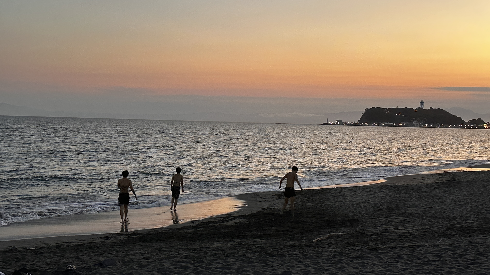
Overview
In this homework, I implementated a path tracer that simulates how light travels through a 3D scene. I started by generating camera rays and computing their intersections with triangles and spheres. I then implemented a Bounding Volume Hierarchy (BVH) to accelerate ray-scene intersection tests.
Next, I implemented direct illumination using uniform hemisphere sampling and light importance sampling. I extended the renderer to support global illumination through recursive light bounces and Russian Roulette. Finally, I implemented adaptive sampling to reduce unnecessary computation in pixels that converge quickly.
One of the most interesting things I learned was how much indirect lighting contributes to a realistic image, especially through color bleeding and illumination in shadowed regions. I also learned the importance of efficient sampling and acceleration structures. During implementation, I encountered issues with ray intersections, surface normals, and recursive lighting calculations, which I resolved through debugging and comparing rendered results.
Part 1: Ray Generation and Scene Intersection
Ray Generation
I implemented camera ray generation by first converting the normalized pixel coordinates into positions on the camera's sensor plane using the horizontal and vertical fields of view. For each pixel, I generated a random sample within the pixel area to reduce aliasing.
I then constructed a ray direction in camera space, transformed it into world space using the camera-to-world matrix, and normalized the resulting direction. The ray starts at the camera position and travels through the corresponding point on the sensor plane.
Primitive Intersection
For triangle intersection, I implemented the Moller-Trimbore algorithm. I first calculated two edge vectors of the triangle and used cross and dor products to solve for the barycentric coordinates \(u\) and \(v\), as well as the intersection distance \(t\). A valid intersection must satisfy \(u \geq 0\), \(v \geq 0\), \(u+v \leq 1\), and the valid ray distance range.
After I finding a valid intersection, I updated the ray's maximum intersection distance to keep track of the closest hit. I also used barycentric interpolation of the three vertex normals to calculate a smooth surface normal at the intersection point.
For sphere intersections, I substituted the ray equation into the sphere equation and solved the resulting quadratic equation. I selected the closest valid intersection and calculated the surface normal using the vector from the sphere center to the intersection point.
Normal Shading Results
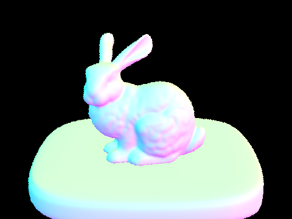
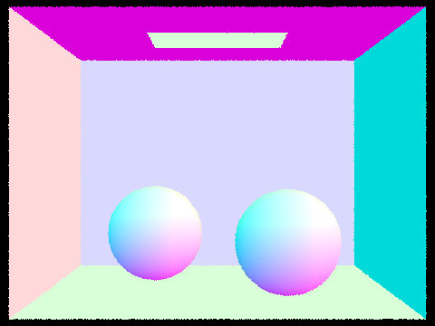
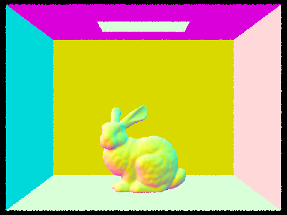
The images above show normal shading for three different scenes. The RGB colors represent surface normal directions rather than material colors. The smooth color transitions on the bunny and spheres indicate that the intersection and surface normal calculations are working correctly.
Part 2: Bounding Volume Hierarchy
BVH Construction
I implemented a Bounding Volume Hierarchy (BVH) to speed up ray-scene intersection tests. Instead of testing every primitive, the BVH organizes the scene into a binary tree of bounding boxes, allowing rays to skip large groups of geometry that they cannot intersect.
To construct the BVH, I first computed a bounding box enclosing all primitives in the current range. If the number of primitives was less than or equal to the maximum leaf size, I created a leaf node. Otherwise, I selected the axis with the largest bounding box extent and split the primitives at the median of their bounding-box centroids using std::nth_element. I recursively repeated this process for the left and right subtrees.
I chose the longest-axis median split because it is simple to implement and produces a relatively balanced tree. Although it does not always minimize intersection costs, it provides an efficient way to divide large scenes into smaller groups.
BVH Traversal
During traversal, I first tested whether the ray intersects the current node's bounding box using the slab method. If the bounding box is missed, the entire subtree can be skipped. Otherwise, I recursively test its children or check individual primitives in a leaf node.
For shadow rays, the traversal returns as soon as any valid intersection is found. For regular rays, I continue searching for the closest intersection and update the ray's maximum distance whenever a closer hit is found.
Performance Comparison
I compared rendering performance with and without BVH acceleration on the Cow and Bunny scenes. Both experiments used a resolution of 240 * 180, one sample per pixel, and eight rendering threads. For the non-accelerated version, I temporarily placed all primitives into a single leaf node instead of recursively constructing the BVH.
| Scene | Primitives | With BVH | Without BVH | Speedup |
|---|---|---|---|---|
| Cow | 5,856 | 0.0067 s | 0.0954 s | 14.24× |
| Bunny | 33,696 | 0.0075 s | 0.4929 s | 65.72× |
The results show that BVH acceleration significantly improves rendering performance, especially for scenes with more complex geometry. For the Cow scene, the rendering time decreased from 0.0954 seconds to 0.0067 seconds, giving approximately a 14.24x speedup. For the Bunny scene, the speedup increased to spproximately 65.72x.
This improvement comes from bounding box pruning. Without BVH acceleration, the renderer performs many primitive intersection tests for each ray. With BVH, it can quickly skip entire groups of primitives when the ray misses their bounding boxes. The average number of primitive intersection tests per ray decreased from 916.34 to 11.06 for Cow, and from 4757.56 to 14.64 for Bunny. The measurements use separate rendering runs with random pixel samples, so the exact ray distributions differ slightly.
Part 3: Direct Illumination
Uniform Hemisphere Sampling
I implemented direct illumination using Monte Carlo integration. For uniform hemisphere sampling, I randomly sample incoming directions over the hemisphere around the surface normal. I then trace a shadow ray in each sampled direction to check whether it hits an emissive surface. If it does, I evaluate the BSDF and accumulate the incoming radiance, weighted by the cosine term and divided by the sampling PDF.
Since directions are sampled uniformly over the hemisphere, the PDF is \( \frac{1}{2\pi} \). However, many sampled directions do not hit a light source, which makes this method relatively noisy.
Light Importance Sampling
For importance sampling, I sample directions directly toward the scene's light sources instead of sampling the entire hemisphere. For each light sample, I construct a shadow ray with a maximum distance just before the light source and check whether another object blocks it.
If the sample is visible, I accumulate the contribution using the BSDF, incoming radiance, cosine term, and sampling PDF. I use one sample for delta lights and multiple samples for area lights, then average the samples for each light.
Hemisphere vs. Importance Sampling
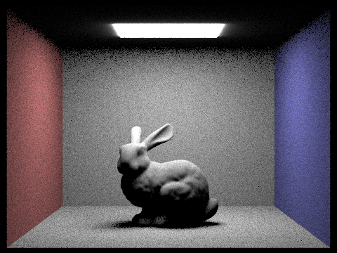
The results show that light importance sampling produces a much smoother image than uniform hemisphere sampling. Hemisphere sampling introduces significant noise because many randomly sampled directions do not hit the area light and contribute no illumination. In contrast, importance sampling directly samples the light source, making more samples useful for estimating direct illumination. As a result, the bunny, surrounding walls, and soft shadows appear noticeably cleaner with importance sampling.
Soft Shadow Noise Comparison
I rendered the same scene using light importance sampling with one sample per pixel and different numbers of area light samples.
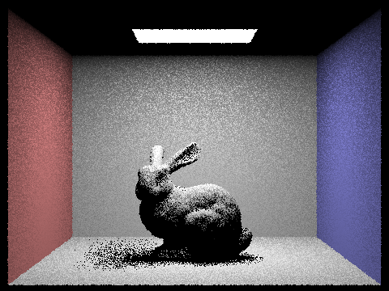
Increasing the number of light rays from 1 to 64 gradually reduces the visible noise in the rendered image. With one light sample, the bunny and its soft shadow contain significant graininess. At 4 samples, the noise becomes less noticeable, while 16 and 64 samples produce much smoother surfaces and more continuous shadow boundaries. This happens because additional light samples reduce the variance of the Monte Carlo estimator. However, improving image quality comes at the cost of more shadow rays and additional rendering time.
Part 4: Global Illumination
Indirect Illumination Implementation
I implemented indirect illumination using recursive ray tracing. At each surface intersection, I first construct a local coordinate system aligned with the surface normal. I then sample a new incoming direction using the BSDF and transform it into world space to generate a secondary ray.
If the secondary ray intersects another surface, I recursively compute the incoming radiance from that intersection. I multiply the returned radiance by the BSDF and cosine term, then divide by the sampling PDF to estimate its contribution to the current surface.
The recursion stops when the remaining ray depth reaches zero. I also implemented Russian Roulette to probabilistically terminate longer paths and compensate for the continuation probability.
The following image shows the CBbunny scene rendered with global illumination using 1024 samples per pixel and a maximum ray depth of 5. Compared to direct illumination, indirect lighting brightens shadowed regions and produces subtle color bleeding from the surrounding walls.
Direct vs. Indirect Illumination
To compare direct and indirect illumination, I rendered the same scene with 1024 samples per pixel. The direct-only image includes illumination arriving directly from the light source, while the indirect-only image shows light reflected from other surfaces before reaching the camera.
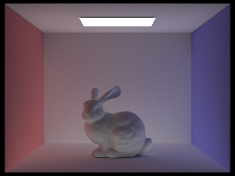
Direct illumination produces stronger lighting on surfaces facing the area light, but leaves occluded regions and the ceiling relatively dark. Indirect illumination fills in many of these darker regions and introduces color bleeding from the red and blue walls. Combining both contributions produces a more natural and realistic result.
Unaccumulated Bounces
To visualize the contribution of individual light bounces, I rendered the CBbunny scene with isAccumBounces set to false and max ray depths from 0 to 5. Each image isolates the contribution from a particular bounce rather than accumulating the contributions from all previous bounces. The light source remains visible because zero-bounce emission is included in the final radiance.
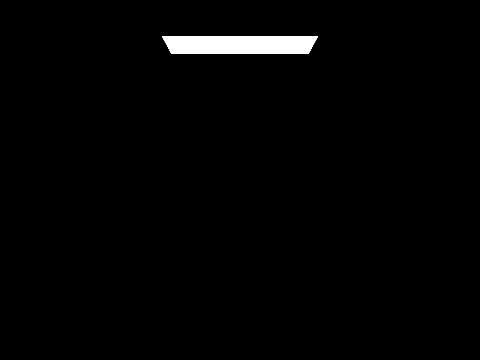
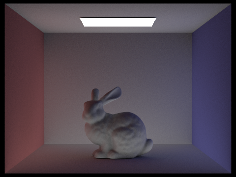
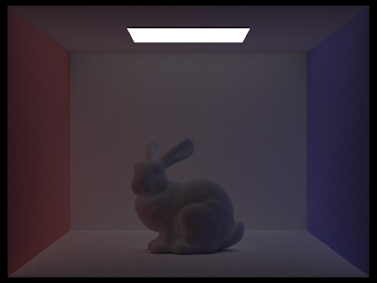
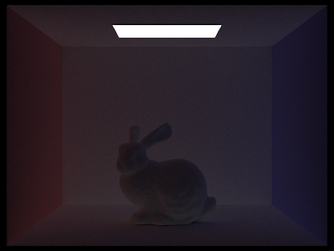
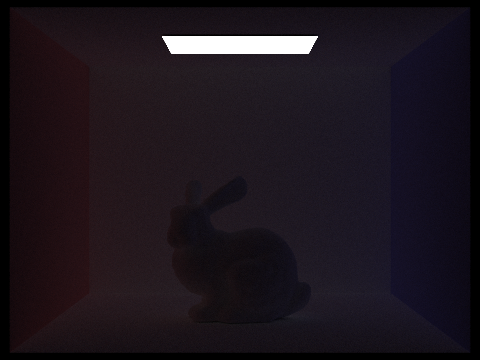
Analysis of Individual Bounces
At depth 0, only the light source is visible because no surface illumination is calculated. At depth 1, direct illumination lights surfaces that can see the area light, while occluded regions remain dark.
At depth 2, indirect illumination becomes visible as light reflected from one surface reaches another surface. This brightens previously shadowed areas and introduces color bleeding from the red and blue walls. At depth 3, the additional bounce contributes weaker but still noticeable indirect lighting, especially in regions that cannot receive light directly from the area light.
At depths 4 and 5, the individual contributions become progressively darker because light loses energy through repeated surface reflections. Compared to rasterization without global illumination, multiple light bounces allow the renderer to capture indirect lighting and color bleeding, producing more realistic illumination.
Accumulated Bounces
To compare accumulated light bounces, I rendered the CBbunny scene with isAccumBounces set to true and maximum ray depths ranging from 0 to 5. Unlike unaccumulated rendering, each image includes the contributions from all bounces up to the specified depth. All images were rendered with 1024 samples per pixel and 4 light samples.
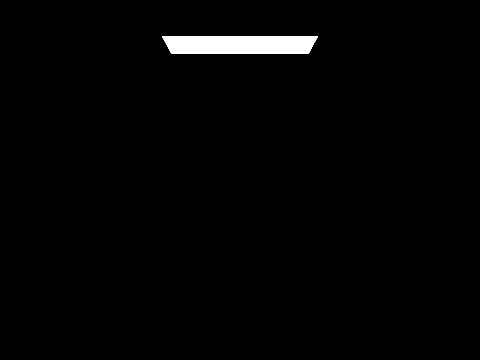
Analysis of Accumulated Bounces
At depth 0, only the area light is visible. At depth 1, direct illumination lights the bunny and the walls, but some regions remain dark due to occlusion. At depth 2, indirect illumination begins to fill in these dark areas, making the bunny and surrounding surfaces brighter.
As the maximum ray depth increases from 3 to 5, additional light bounces contribute more indirect illumination and color bleeding. The overall image becomes more naturally illuminated, especially in areas that cannot receive direct light. However, the difference between higher bounce depths becomes smaller because some energy is absorbed during each surface reflection.
Comparing accumulated and unaccumulated rendering shows why multiple light bounces are important. Unaccumulated images isolate the contribution of individual bounces, which generally becomes weaker at higher depths. Accumulated images combine these contributions to produce a more complete and realistic lighting result.
Russian Roulette
I implemented Russian Roulette to probabilistically terminate recursive light paths and reduce unnecessary computation. After the initial bounce, each path has a continuation probability of 0.65. If a path is terminated, no additional indirect radiance is accumulated. Otherwise, I divide the indirect contribution by the continuation probability to compensate for the terminated paths and keep the Monte Carlo estimator unbiased.
I rendered the CBbunny scene with maximum ray depths of 0, 1, 2, 3, 4, and 100 using 1024 samples per pixel. All images use accumulated illumination and 4 light samples per area light.
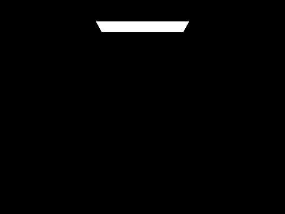
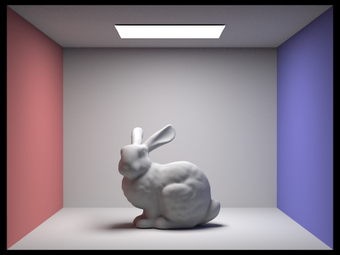
Russian Roulette Analysis
At depth 0, only the area light is visible. At depth 1, direct illumination lights the bunny and surrounding walls, while the shadowed regions remain dark. As the maximum ray depth increases, additional indirect reflections brighten these regions and introduce color bleeding from the colored walls.
With a maximum depth of 100, Russian Roulette allows some light paths to continue through many reflections while terminating most paths much earlier. This avoids tracing every path to the maximum depth. Dividing the surviving contributions by their continuation probability compensates for random termination, so the expected lighting contribution is preserved, although individual samples may have more variance.
Overall, Russian Roulette provides a way to estimate higher-order indirect illumination without requiring every ray to trace a fixed, large number of bounces. This improves computational efficiency while preserving the expected radiance.
Samples Per Pixel Comparison
To investigate how the number of samples per pixel affects rendering quality, I rendered the CBbunny scene with 1, 2, 4, 8, 16, 64, and 1024 samples per pixel. I kept the maximum ray depth at 5 and used 4 light samples for each area light. All images include accumulated direct and indirect illumination.
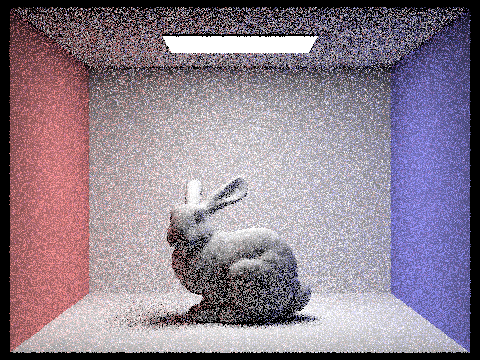
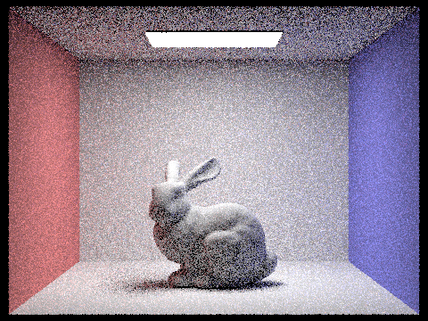
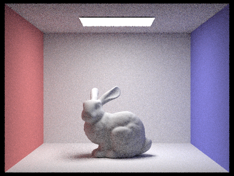
Sampling Rate Analysis
Increasing the number of samples per pixel reduces the visible noise in the rendered images. With only 1 or 2 samples per pixel, the bunny and the surrounding walls contain noticeable graininess, especially in regions receiving indirect illumination. As the sample count increases to 8, 16, and 64, the surfaces and shadow boundaries become progressively smoother.
At 1024 samples per pixel, the image is much cleaner, with more stable indirect illumination and clearer details on the bunny. This improvement follows the Monte Carlo sampling relationship, where the standard error generally decreases in proportion to the inverse square root of the sample count. However, increasing the number of samples also increases rendering time, creating a trade-off between image quality and computational cost.
Part 5: Adaptive Sampling
Adaptive Sampling Overview
I implemented adaptive sampling to reduce unnecessary computation in regions that converge quickly while allocating more samples to noisy regions. The main idea is that smooth areas of the image usually need fewer samples, while edges, shadows, and high-variance lighting regions need more samples to produce a clean result.
In my implementation, I traced samples in batches and kept track of the running sums of pixel illumination values using \(s_1\) and \(s_2\). After every batch, I computed the sample mean \[ \mu = \frac{s_1}{n} \] and the sample variance \[ \sigma^2 = \frac{1}{n-1}\left(s_2 - \frac{s_1^2}{n}\right). \] From this, I estimated the 95% confidence interval: \[ I = 1.96 \cdot \frac{\sigma}{\sqrt{n}}. \] If the confidence interval satisfied \[ I \leq \text{maxTolerance} \cdot \mu, \] then the pixel was considered converged and sampling stopped early. Otherwise, sampling continued until reaching the maximum sample count.
I also stored the final number of samples used for each pixel in sampleCountBuffer, which allows visualization of the sampling rate across the image. This makes it easy to see where the adaptive sampler spent more effort.
Adaptive Sampling Results
I rendered two scenes using adaptive sampling with a maximum of 2048 samples per pixel, 1 light sample, a maximum ray depth of 5, a batch size of 32, and a tolerance of 0.05. The adaptive sampler can stop early when a pixel reaches the convergence threshold. For each scene, I include the sample rate visualization and the final rendered image.
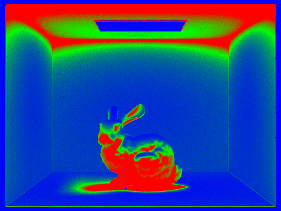
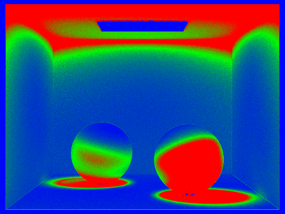
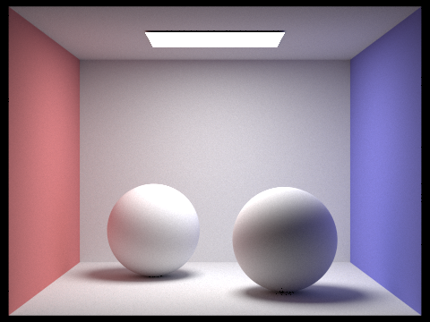
Analysis
The sample rate visualizations clearly show that adaptive sampling spends more samples in visually difficult regions. In both scenes, the highest sampling rates appear around shadow boundaries, object silhouettes, corners near the light source, and areas with stronger indirect lighting variation. These regions have higher variance because small changes in sampled ray directions can produce noticeably different lighting results.
In contrast, large smooth regions such as the middle of the walls and other evenly lit surfaces converge much faster, so they require fewer samples. This is visible in the cooler colors of the sampling-rate images. As a result, adaptive sampling improves efficiency by concentrating computation where it matters most, while still producing a clean final image that is visually close to a uniformly high-sample rendering.
(Optional) Part 6: Extra Credit Opportunities
Overview
For the extra credit, I implemented bilateral denoising as a post-processing step for my path tracer. Monte Carlo path tracing oftenproducesvisible noise when using a small number of samples per pixel. My goal was to reduce this noise without excessively blurring object boundaries and othe rimportant image details.
Implementation
I implemented a bilateral filter that operates on the HDR sampleBuffer, which stores the rendered image in linear RGB radiance values. For each pixel, the filter examines a local neighborhood and computes a weighted average of neighboring colors using two components: a spatial weight and a range weight.
The spatial weight decreases with the distance between pixels, while the range weight decreases when neighboring pixels have different colors. The combined weight is:
\[ w(p,q) = \exp\left(-\frac{\|p-q\|^2}{2\sigma_s^2}\right) \exp\left(-\frac{\|I(p)-I(q)\|^2}{2\sigma_r^2}\right) \]
The filtered color is calculated using a normalized weighted average:
\[ I_{\mathrm{filtered}}(p) = \frac{\sum_{q \in N(p)} w(p,q) I(q)} {\sum_{q \in N(p)} w(p,q)} \]
I used a neighborhood radius of 3 pixels (7 * 7 window), a spatial sigma of 2.0, and a range sigma of 0.2. These parameters provide noticeable smoothing while preserving major color boundaries.
Initially, I applied the bilateral filter inside write_to_framebuffer(), which is called separately for each rendering tile. This caused visible horizontal artifacts because different tiles were filtered before the entire image was complete.
To fix this, I moved the denoising operation to the final image-saving stage. After all rendering threads finish, the complete HDR sampleBuffer is copied through the bilateral filtering process into a separate output buffer. The filtered image is then converted to display colors and saved as a PNG.
The original HDR sampleBuffer remains unchanged. I also added a boolean switch so that bilateral denoising is disabled by default, preserving the original path tracer behavior for Parts 1 through 5.
Rendering Results
I tested bilateral deboising on the CBbunny scene using 16 samples per pixel, 4 area-light samples, and a maximum ray depth of 5. The images below compare the noisy low-sample rendering with the bilaterally filtered result.

For reference, the following image was rendered with 1024 samples per pixel using the original path tracer.

Results anf Analysis
The bilateral filter reduces visible noise in the low-sample rendering, especially across diffuse surfaces such as the walls, floor, and bunny. Compare with the noisy input, the filtered image appears smoother while retaining the main object silhouettes and color boundaries.
However, the filtered result also shows some loss of fine detail. In particular, parts of the bunny surface and soft shadow boundaries appear slightly blurred. This illustrates the trade-off between noise reduction and detail preservation. Increasing the filter radius of range sigma can produce stronger smoothing, but may also remove important image feature.
The 1024-SPP image provides a useful visual reference for evaluating the remaining noise and image details. Te original and denoised 16-SPP images were generated in separate stochastic rendering runs, so their differences cannot be attributed solely to filtering. Nevertheless, the comparison demonstrates the potential of bilateral denoising as a lightweight post-processing technique for low-sample path tracing.
Conclusion
This extension helped me understand the relationship between Monte Carlo sampling noise and image-space filtering. It also highlighted the importance of placing post-processing operations at the correct stage of the rendering pipeline. By applying the bilateral filter only after the complete image is available, I was able to eliminate tile-related artifacts and preserve the original rendering data.